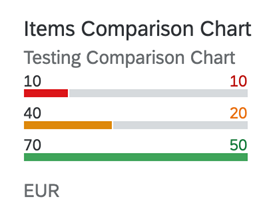

In the image above, the values on the left (10, 40 and 70) represent the dimension
values. They are the IDs of the SalesOrder Items. For more
information on this chart type, refer Samples documentation.
There are two variants to the display value. If the Value property of
the DataPoint do not have a text associated with it in the
@com.sap.vocabularies.Common.v1.Text annotation, then the value is
displayed. If there is a text associated with the DataPoint, then the TextValue is
displayed.
The unit of measure is plotted using the first record (first instance of the data point) that is to be plotted.
For semantic coloring, only Criticality property is supported.
Mandatory:
UI.Chart → ChartType: “Bar”UI.Chart → DimensionsUI.Chart → MeasuresUI.Chart → MeasureAttributes →
DataPointUI.DataPoint → ValueThe UI.Chart Title property is used for the title.
The UI.Chart Description property is used for the subtitle.
<Annotation Term="UI.Chart" Qualifier="ComparisonPath">
<Record Type="UI.ChartDefinitionType">
<PropertyValue Property="ChartType" EnumMember="UI.ChartType/Bar"/>
<PropertyValue Property="Description" String="Testing Comparison Chart"/>
<PropertyValue Property="Dimensions">
<Collection>
<PropertyPath>SalesOrderItem</PropertyPath>
</Collection>
</PropertyValue>
<PropertyValue Property="MeasureAttributes">
<Collection>
<Record Type="UI.ChartMeasureAttributeType">
<PropertyValue Property="Measure" PropertyPath="NetAmount"/>
<PropertyValue Property="Role" EnumMember="UI.ChartMeasureRoleType/Axis1"/>
<PropertyValue Property="DataPoint" AnnotationPath="@UI.DataPoint#ComparisonPath"/>
</Record>
</Collection>
</PropertyValue>
<PropertyValue Property="Measures">
<Collection>
<PropertyPath>NetAmount</PropertyPath>
</Collection>
</PropertyValue>
<PropertyValue Property="Title" String="Items Comparison Chart"/>
</Record>
</Annotation>
Please note that this topic is currently only applicable to SAP Fiori elements for OData V4.